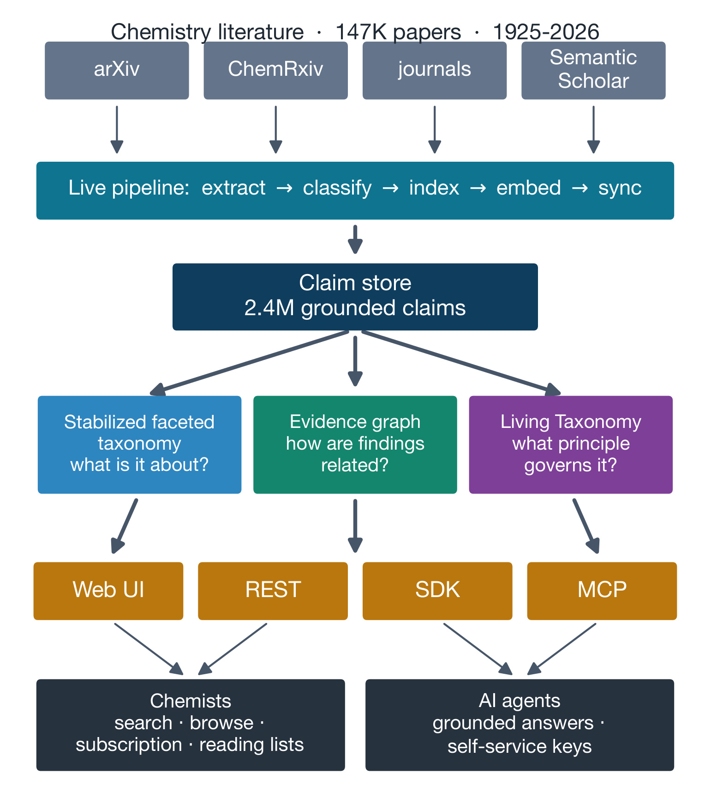
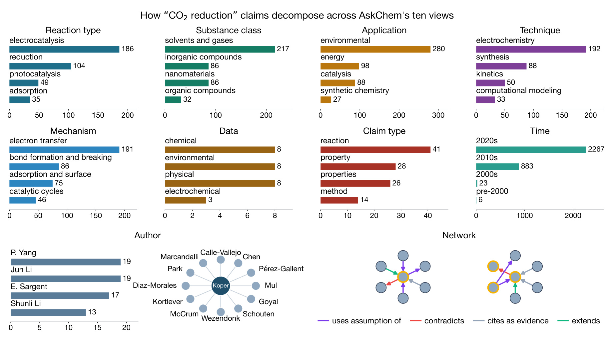
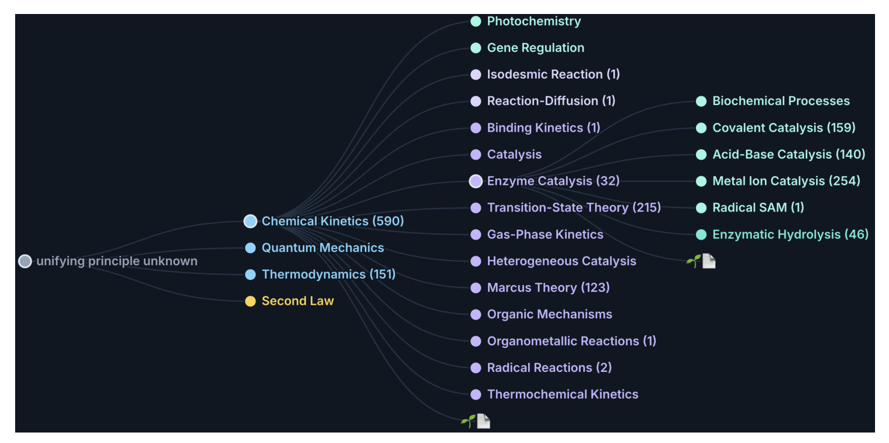
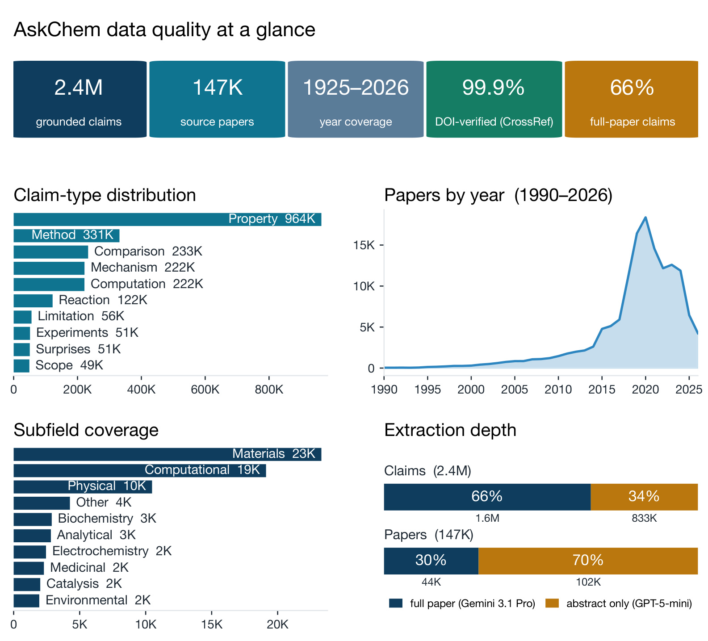
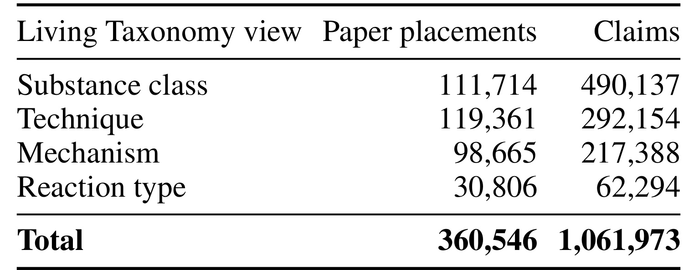
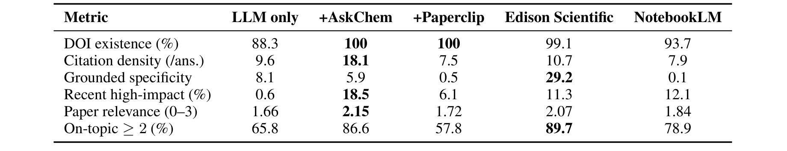
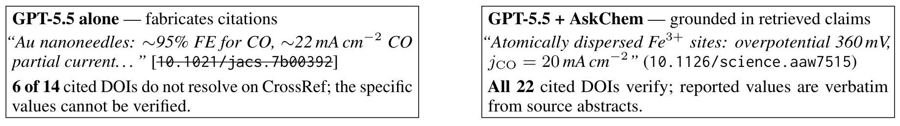

AskChem：以可溯源科学主张为中心的化学文献综合基础设施
AskChem 由 Bing Yan、Gregory Wolfe、Stefano Martiniani 和 Kyunghyun Cho 提出，一作主机构是 New York University，合作机构包括 Matterstack, Inc.。它不是一个直接生成长答案的化学聊天机器人，而是一层面向检索、浏览和 Agent 的持久化知识基础设施：将论文转成带出处的原子科学主张，再让人类与模型通过同一组对象完成跨论文综合。论文入口：arXiv:2607.28618。截至 2026-08-03，本轮已经核验 AskChem 在线服务 可访问，REST 的统计与检索端点能返回实时结果；公开代码仓库 为 public、MIT License，包含服务端、检索、taxonomy、SDK、MCP 和测试代码；论文所述 CC-BY 索引快照也有独立数据入口。换言之，Web、REST、Python SDK、MCP 和源代码当前都有可核验载体，而不是仅停留在论文中的可用性声明。
化学文献综合往往要把分散在许多论文中的具体测量、反应条件、机制与相互矛盾的发现拼接起来，但现有检索系统首先返回的仍是论文列表；科学家和 AI Agent 因而必须重新打开文档、定位证据、核对出处，再手工组织跨论文答案。文档级入口既没有直接暴露 claim 级证据和领域结构，也会让只依赖参数记忆的模型产生看似合理却无法解析的引用。
1. 背景和问题
化学检索与一般网页问答最明显的差别，是答案通常不是“哪篇论文讨论过这个主题”，而是“哪些材料在什么条件下得到什么测量值，这些结果彼此支持还是冲突”。论文用电催化二氧化碳还原举例：研究者关心哪些催化剂把二氧化碳还原成一氧化碳，以及各自的 Faradaic efficiency。真正需要的答案散落为催化剂、温度、电解质、电流密度、选择性和机理等多个局部陈述；论文标题或摘要只是一层容器。传统搜索把相关文档排在前面后，最费认知的步骤仍留给读者：打开全文、找到原句、判断数字的条件范围、解析 DOI，再将来自不同实验设置的结果放进可比较框架。
对 Agent 来说，这个缺口会被进一步放大。文档级 RAG 可以召回若干段落，但检索块通常没有稳定的科学语义类型，也未必把 DOI、原文引句和条件字段绑定为不可分割的契约。模型若在多个块间概括，容易把一个来源的数值与另一个来源的对象拼接；若完全不检索，则可能生成格式正确却不存在的 DOI。即使最终答案“听起来像化学”，审阅者仍需要反向追踪每个数字。AskChem 的问题意识因此不是提高语言流畅度，而是把可验证性前移到索引对象本身：每个可返回单元应当从创建起就携带来源与证据，而不是回答生成后再补引用。
论文把这类单元称为 claim。它是从论文中分割出的单一、具体、带类型的科学断言，例如某种催化剂在某些条件下达到某个产率；其最小 provenance 契约包括 source DOI，以及逐字引句或显式 evidence locator。claim 还可以带反应物、产物、条件、测量值、材料、claim type、抽取置信度等结构化字段。这里的关键不是把文档切得更碎，而是让每个碎片具有独立身份，能够被检索、归类、连边和查证。Source 保存论文元数据，TreeNode 保存同一 claim 在不同分面中的路径，Edge 保存 claim 间的有向关系；这些结构都回指共享 claim ID，避免“搜索结果、知识图和分类树各自保存一份相互漂移的摘要”。
这一设计也回应了科学知识库的两种冲突需求。第一种是生产检索需要稳定：分类路径不能每天随模型自由改名，否则保存的查询、订阅与 Agent 工具难以复用。第二种是科学认识持续演化：新机制和新现象会出现，过早冻结本体又会压掉新概念。AskChem 将二者拆开：稳定分面 taxonomy 承担搜索和浏览，Living Taxonomy 则以原则、理论、模型、机制和现象组织探索性视图，并允许找不到宿主时 abstain、提出新分支。前者追求操作一致性，后者承认知识结构仍需专家验证。
从大模型工程角度看，AskChem 值得关注的核心不是化学垂直领域本身，而是它重新定义了工具调用的返回契约。Agent 不再只得到一组 URL 或自由文本摘要，而得到可以继续执行 source、neighborhood、browse 等操作的稳定对象。这个思路也能迁移到推荐与搜索：候选召回若只返回 item ID 与相关性分数，后续重排很难解释“为什么”；若同时返回经过治理的证据单元、时效、来源与关系，生成式重排器便有机会区分事实、解释和策略。但迁移时必须保留论文自己的边界：AskChem 证明的是 claim-centered infrastructure 在 30 个化学综合问题上的引用 groundedness，而不是任何领域都已经获得更高的完整事实准确率。
因此，论文真正改变的是系统的责任划分：生成器负责组织回答，索引层负责交付可复核对象，原始文献仍是最终事实依据。把这三层分开后，用户可以针对某条 claim 报错、重新抽取或追踪版本，而不必把整篇答案视为一个不可拆解的黑盒。
2. 方法
2.1 Claim-Centered Representation：把论文拆成可核验对象
系统输入覆盖 arXiv、ChemRxiv、期刊和 Semantic Scholar 元数据，离线管线依次执行 extract、classify、index、embed 与 sync。抽取采用两条互补路径：GPT-5-mini 面向标题与摘要做高吞吐处理；Gemini 3.1 Pro 通过 Vertex AI batch 读取原生 PDF，获取假设、局限、意外发现等摘要常常缺失的类型。附录还说明少量旧索引来自 GPT-4o 或 GPT-4o-mini。每次调用要求 JSON-object 约束输出，随后按 claim schema 检查必需的 provenance 字段、数值范围和化学特定字段；无效 JSON 或 schema 不合格结果会自动重试。
核心机制是把“来源”从回答级装饰变成 claim 级不可缺字段：在线检索之前，claim 就已经与 DOI、逐字引句或 evidence locator 绑定。全文抽取若没有一段连续原句，可用 location_in_paper 加结构化证据定位；这使深抽取不必伪造一条表面连贯的 quote。Source、TreeNode 与 Edge 又共享 claim identity，所以搜索命中可以无损跳到论文来源、分类路径和关系邻域。训练与推理的区别也很清楚：离线模型负责抽取与关系构造，在线 Agent 并不重新运行这些大模型，而是查询已经落盘的 SQLite/FTS5、向量索引和 FastAPI 服务。

Figure 2 把这一分层画得很完整。顶部不是一个封闭数据集，而是持续进入的多源化学文献；中间 live pipeline 将抽取、分类、索引和向量化解耦，最终汇入 2.4M grounded claims 的共享存储。存储之上不是单一“知识图谱”，而是三种面向不同任务的结构：稳定分面回答“这条 claim 在谈什么”，evidence graph 回答“它与别的发现如何关联”，Living Taxonomy 回答“什么科学原则支配这项贡献”。最下层 Web UI、REST、SDK、MCP 又共享这些对象，意味着人类在网页看到的证据与 Agent 工具取得的 claim 不必经过另一套摘要层。图中 Chemists 与 AI agents 的入口分开，但数据身份没有分叉，这正是系统减少引用漂移的关键。
本文没有可复用的核心公式。全文没有编号的模型结构、训练损失、检索打分或复杂度表达式；只出现评审一致性 κ=0.914、化学计量符号和若干指标定义。RRF 被描述为多路召回的融合机制，但论文没有给出需要复现的数学推导，因此不应为了笔记形式自行补一个未经原文给出的公式。复现重点应放在 schema、索引版本、召回通道、relation 类型、API 响应和证据门禁，而不是虚构一个端到端目标函数。
2.2 Evidence Graph：在共享身份上表达跨论文关系
仅有原子 claim 仍不足以完成综合，因为科学问题经常要求判断一条发现被后续工作支持、扩展、推导还是反驳。AskChem 在 claim store 上再运行一遍关系抽取，输出 cites_as_evidence、supports、extends、contradicts 和 derives_from 等有向边；每条边保留置信度与关系证据。输入是已经带 DOI 和引句的 claim，输出不是新的自然语言总结，而是两个 claim ID 之间可追溯的 typed edge。这样做把“关系是否正确”变成独立可审计对象，而不是隐藏在长答案的连接词里。
在线阶段，/api/claims/{id}/neighborhood 返回某个 claim 的入边与出边；网页也能围绕搜索命中诱导局部关系图。用户可以先用词法或向量召回找到一个测量，再沿 supports 或 contradicts 跳到其他论文，而无需让 LLM 在一次提示中读完所有文档。图层并不替代搜索：论文明确把它定位为 retrieval 上的 relational layer。这个取舍很重要，因为图关系覆盖不可能完整；若强迫所有检索都先走图，缺边会变成召回盲区。AskChem 让全文检索、分面召回和关系导航并存，图只在需要跨论文证据链时提供结构。
关系抽取也暴露了最需要谨慎的质量边界。当前图包含 171,342 条 typed edges，作者对分层抽样的 148 条边做领域审核，其中 2 条无法判断；在余下 146 条中有 143 条关系类型正确，得到 97.9% edge-type precision。这个数字只说明抽样边的类型判定较可靠，并不保证所有端点 claim 本身语义正确，也没有证明图的 recall。部署 Agent 时，合理策略是把边作为导航与证据排序信号，让最终回答仍展示源 DOI 和引句；不能把一条高置信 supports 边当作无需打开原始文献的事实裁决。
2.3 Stabilized Faceted Taxonomy：让检索、分组和浏览共享索引
稳定分面不是由专家预先写死的完整化学 ontology。AskChem 先在消化论文、抽取 claim 的过程中诱导类别路径，再通过 canonical L1 routing、同义词归一和近重复模糊聚类，将路径整理成可长期使用的 L1/L2/L3 层级；一个 claim 可以落在 2–5 段路径中。五个内容分面覆盖 reaction type、substance class、application、technique 与 mechanism topic，另有 claim type、data、time、author，以及作为 Network 展示的 evidence graph。多个视图都是同一 claim store 的投影，不是重复构建的十套语料。
在线 /search 将 FTS5 claim-text、paper-level recall、taxonomy-node recall 与 dense-vector recall 通过 reciprocal rank fusion 合并。返回结果保留 view paths，客户端可以按层级分组、扩展相关类别，或从单条结果进入 browse。这里的输入是用户查询及可选 view，输出是 claim 列表、来源与路径；taxonomy 在推理时既提供额外召回，也提供结果组织。相比只用 embedding，它能够在语义相近但实验角色不同的条目间保留“反应类型、材料、测量、机制”等结构；相比纯人工 ontology，它又能随新论文出现而诱导候选路径，再经过稳定化治理。

Figure 4 用同一组 CO2 reduction claims 展示十种读取方式。Reaction type 里 electrocatalysis 与 reduction 占据主要位置；Substance、Application、Technique 和 Mechanism 又把同一证据重新投影为材料、用途、实验方法与作用机理。Data 与 Claim type 让用户区分测量类、反应类和方法类陈述；Time 暴露 2020 年代条目的明显增长；Author 子图提供合作关系，Network 则显示 supports、contradicts、cites_as_evidence、extends 等边。图中各面板数值不可直接横向当作互斥类别求和，因为同一 claim 可进入多个视图；它证明的是索引能够围绕一个主题切换导航坐标，而不是建立了一个无重叠的化学分类表。
稳定化的代价是规范化错误。字符串规则可能把不同类别合并，也可能留下近重复路径；论文尚未单独隔离 taxonomy recall 对最终检索增益的贡献，也没有报告分面 placement 的大规模专家验证。因此它更适合承担召回扩展、聚类展示和交互浏览，不宜直接作为监督标签的绝对真值。若迁移到推荐搜索，可以借鉴“多个 operational views 共享候选身份”的设计，但必须对 view placement 做抽样审核，并记录 taxonomy 版本，否则离线特征与线上解释会随分类树更新悄然漂移。
2.4 Living Taxonomy 与多接口交付：把原则视图留在探索层
Living Taxonomy 解决另一类问题：稳定分面告诉用户 claim 在谈什么，却不解释一项论文贡献受什么科学思想支配。系统读取论文级 claims，把 paper-grounded leaf 放到 principle、theory、model、mechanism、phenomenon 的层级下；如果现有树没有合适 host，模型可以 abstain 并提出 proposed branch，而不是被最近邻强行塞入低边际类别。这个输出适合探索语料中的概念结构和研究脉络，但作者刻意称其为 exploratory overview，而非经过全面验证的科学 ontology。

Figure 5 展示了一条从“unknown/unifying principle”经过 Chemical Kinetics、Quantum Mechanics、Thermodynamics、Second Law，再展开到 Photochemistry、Gene Regulation、Catalysis 等节点的局部路径。重要的不是具体节点是否已经成为化学共识，而是层级回答了与稳定分面不同的问题：例如同一 catalytic claim 在 operational view 中可能按 reaction type 和 technique 被检索，在 Living Taxonomy 中则试图落到支配它的动力学或机理概念。图中有些叶子旁显示论文数量，有些节点仍来自模型生成与拟议分支；这正说明它适合发现和导航，不适合在没有专家核验时被当作严格本体推理链。
最终交付层保持接口同构。Web 用户、REST 客户端、Python SDK 与 MCP Agent 都能访问 search、claim、neighborhood、source、views、browse、authors 和 stats 等能力；source 查询按 DOI 返回论文及其 claims，neighborhood 暴露证据边，browse 返回层级节点及计数。本轮实际调用公开 /api/stats 得到 2,442,810 条 claims 与 146,627 个 sources，并用 /api/search 对 Suzuki coupling 完成匿名检索，响应包含 claim ID、类型、结构化条件、source DOI、verbatim quote、view paths 和模型/版本信息。由此可以确认论文所述接口不仅存在于架构图，也确实以机器可消费形式运行。公开仓库进一步提供 SDK、MCP server、自托管和测试代码，但独立部署仍需要下载数据库快照，并自行承担索引更新、API 限流和模型抽取成本。
3. 实验结果
3.1 RQ1 与规模：可追溯门禁覆盖到了什么
论文将评测拆为四个问题：claim 是否都有来源证据，claim-level 结构是否足够可靠，claim-centered retrieval 是否改善跨论文综合，以及部署系统能否在语料规模运行。RQ1 的强结论是当前 2.4M claims 全部带 claim type、source DOI 和逐字引句或 locator；CrossRef 自动检查显示 99.9% DOI 可验证。这个结果说明索引的 schema 门禁真实覆盖了整个部署库，而不是只在 benchmark 子集上补引用。但它只能证明“能找到出处”，不能证明 LLM 对原文的语义抽取完全正确。作者在 Figure 3 caption 和正文都明确保留了这条边界。

Figure 3 让规模数字有了结构。索引覆盖 1925–2026 年的约 147K 论文与 2.4M claims；claim 类型中 property 约 964K，method 331K，comparison 233K，mechanism 与 computation 各约 222K，reaction 122K，limitations、experiments、surprises、scope 都在数万级。按 claim 计，约 1.6M、即 66% 来自全文深抽取，833K、即 34% 来自摘要；按论文计却只有约 44K、即 30% 有全文，102K、即 70% 只有摘要。两组比例看似相反，是因为有全文的论文可产生更多细粒度 claims。年代曲线在 2020 年后快速上升，表明覆盖高度受近期数字化与开放获取语料影响；子领域又以 materials 和 computational 为主，因此“2.4M”不能被解读为均匀覆盖整个化学学科。
RQ4 的规模论证主要是部署事实而非延迟基准：同一 REST schema 可联合查询 2.4M claims、307K taxonomy nodes 与 171K evidence edges，供 Web、SDK 和 MCP 复用。论文没有给出 P95 延迟、吞吐、缓存命中率或索引更新耗时，所以“fast enough for interactive browsing”更接近可用性描述。工程复现应补测热/冷查询、FTS 与向量召回占比、RRF fan-out、cross-encoder 可选重排成本、匿名与 API key 限流，以及新增论文从 submit 到可检索的延迟。否则 corpus-scale 只能证明“系统跑起来”，不能证明在高并发 Agent 环境中仍有稳定服务质量。
3.2 RQ2：关系边与两套 taxonomy 的可靠性
Evidence graph 的 97.9% edge-type precision 是结构可靠性中最直接的人工证据。148 条分层抽样边中，2 条无法判定，余下 146 条有 143 条类型正确。样本覆盖 supports、contradicts、extends、derives_from、cites_as_evidence 等关系，因此至少说明关系抽取并非完全靠未经检查的模型自评。不过评审者是领域专家作者，论文没有给出多专家一致性或不同 relation 的分项 precision；也未报告“应该存在的边有多少被漏掉”。在回答冲突发现问题时，高 precision 能减少错误连边，但低 recall 仍可能漏掉关键反证。
稳定分面在生产中真实参与 hybrid retrieval 和页面浏览，但论文没有做移除 taxonomy-node recall 的消融，也没有专家验证 path placement。因此 RQ2 对 stable taxonomy 的证据是“部署使用 + 可视化例子”，弱于关系边的抽样审计。Living Taxonomy 更谨慎：它有 4,931 个节点，覆盖约 1.1M claims 和 361K paper placements，其中 663 个是开放 proposed branches；作者公开承认它仍是 exploratory，placement 例子只说明强制最近邻会误放低 margin 案例，不能替代全面评价。

Table 3 将 Living Taxonomy 的覆盖拆成四个视图：Substance class 有 111,714 个 paper placements、490,137 条 claims；Technique 为 119,361 与 292,154；Mechanism 为 98,665 与 217,388；Reaction type 为 30,806 与 62,294；合计 360,546 placements 和 1,061,973 claims。表下注释极其重要：一篇论文可以同时出现在多个 view，placements 不是 unique-paper count。因而这些数值衡量的是层级挂载规模，不是新增覆盖了 36 万篇独立论文。它也没有报告每个节点的 purity、深度分布或专家接受率，后续若用该树做 Agent 规划，应把 proposed branch 与已验证节点分开返回。
3.3 RQ3：AskChem-Bench 的协议与主结果
AskChem-Bench v1.1 共 30 个跨论文问题，条件聚合、时间追踪、冲突发现各 10 个。五种设置都覆盖完整题库：GPT-5.5 裸 reader、同一 reader 加 AskChem、加 Paperclip、Edison Scientific 的 PaperQA-family agent、NotebookLM Deep Research。AskChem 会把问题重写为 3–4 个关键词子查询，并行检索后去重、diversify 到最多 40 条 claims 再综合；Paperclip 使用相同 rewriter 和 synthesizer，但输入是论文级检索。这样设计尽量控制 reader 差异，不过 Edison 与 NotebookLM 是各自封闭流程，不能视为严格同计算预算对照。
所有抽取 DOI 都经 CrossRef 解析。Relevance 用 Gemini 3.1 Pro 判 0–3 分，先在 100 条领域专家标签上校准，报告 93% 一致率与 κ=0.914。六项指标分别衡量 DOI existence、每答案去重 verified DOI 数、与引用同句的定量 token 数、最近五年且引用数至少 50 的论文比例、平均 relevance、以及分数至少 2 的 on-topic 比例。这里没有一个单一“正确率”：前两项偏 provenance，grounded specificity 偏定量密度，后两项偏主题相关，必须一起读。

Table 1 显示 +AskChem 的 DOI existence 从裸 LLM 的 88.3% 提升到 100%，与 Paperclip 并列；citation density 从 9.6 增至 18.1 个 verified DOI/answer，为五者最高。Recent high-impact 为 18.5%，paper relevance 为 2.15，也都是表中最高；on-topic≥2 达 86.6%，明显高于裸模型的 65.8%，但低于 Edison 的 89.7%。最值得警惕的是 grounded specificity：AskChem 只有 5.9，不仅远低于 Edison 的 29.2，也低于裸模型的 8.1。也就是说，它更擅长给出多而可解析、相关性较高的引用，却没有在每个答案中提供最多的“带引用定量细节”。论文据此把 AskChem 定位为开放、claim-level、可交互和可被 Agent 复用的基础设施，而不是宣称全面击败深研究系统。

Figure 6 把 provenance 差异落到 benchmark 问题 ca04。GPT-5.5 独立回答给出金纳米针约 95% Faradaic efficiency、约 22 mA cm⁻² 一氧化碳分电流等具体数字，但 14 个 DOI 中有 6 个无法在 CrossRef 解析，数字也无法查证；接入 AskChem 后，回答改为引用分散铁位点的过电位和电流数据，22 个 DOI 全部可解析，数值来自源摘要的逐字证据。这张图支持“检索能消除该案例中的虚假 DOI”，却不能单独证明新答案涵盖了所有催化剂、正确解释了实验条件，或比专家综述更完整。它也是论文伦理声明为何仍要求关键决策阅读一手来源的最好例子。
CrossRef 解析本质上验证标识符存在，并不审查引句是否准确蕴含模型概括；要把该案例升级为事实正确性证据，还需逐条核对对象、数值、单位和实验条件是否与原文一致。
3.4 证据链能支撑什么、不能支撑什么
综合四个 RQ，AskChem 最扎实的证据有三层。第一，部署索引在 schema 层普遍携带 DOI 与 quote/locator，实时服务和公开数据可以独立访问。第二，关系类型在小规模专家样本上有 97.9% precision。第三，在 30 题 benchmark 上，与同一 GPT-5.5 reader 的无检索设置相比，DOI 可解析率、引用密度、相关性和近期高影响覆盖显著改善。这三层分别回答“有没有出处”“关系类型是否大体可信”“检索是否改善跨论文引用”，但没有合并成一个端到端事实正确率。
缺失证据同样明确：没有抽取 claim 的大规模 semantic correctness 审计；没有 taxonomy-node recall 消融；没有 Living Taxonomy placement 的专家通过率；没有用户研究、真实实验规划成功率或关键化学决策安全评估；没有服务延迟与成本表；AskChem-Bench 只有 30 题，且 grounded reader、相关性 judge 与部分抽取器都依赖近期闭源模型。论文的优势在于主动写出这些界限。对复现者而言，应优先增加 claim-entailment 审核、数值-条件绑定准确率、负例与矛盾对召回、跨版本索引稳定性，以及人在环路中从 claim 返回原文的耗时，而不是只扩大 claim 数量。
4. 总结
4.1 我的判断
AskChem 最有价值的贡献，是把 RAG 中常被混在一起的四件事拆开：原子证据表示、检索与分组、跨文档关系、回答生成。它不要求一个更大的 reader 同时承担所有责任，而是先建立可持久化、可版本化、可追踪的 claim store，再让不同界面共享这些对象。这样一来，错误可以定位到抽取、分类、连边、召回或综合中的具体层，而不是只看到最终答案“有幻觉”。论文也没有用 100% resolvable DOI 掩盖 grounded specificity 落后 Edison 的事实，主结果表保留了明确的系统画像差异。
对推荐、搜索和通用 Agent 的迁移启发主要在接口契约：候选不应只是自由文本块，而应带来源、时间、类型、结构化字段和证据定位；多种检索视图应共享稳定对象身份；关系图适合作为导航信号，不应替代基础召回；探索 taxonomy 与生产 taxonomy 需要分层治理。若把这套思路用于生成式推荐，claim 可以换成“用户行为证据、物品属性断言、规则或策略反馈”，但必须尊重隐私、时间衰减和曝光偏差，不能把历史行为自动提升为可公开的事实主张。
4.2 工程复现与接入建议
公开仓库、数据快照、REST、SDK 和 MCP 让复现入口比较完整。合理的最小复现顺序是：先固定一小批开放获取论文与 index snapshot，验证 claim schema、DOI、quote/locator 可往返；再抽样检查数值与条件是否绑定到同一证据；随后分别评估 FTS、dense、taxonomy-node 和 paper recall，最后才接 reader 生成答案。在线接入应保留 claim ID、source DOI、extraction model/version 与 taxonomy version，使缓存、回滚和重新抽取可追踪。MCP 工具要把 source 与 neighborhood 设为二次核验路径，而不是只暴露 search 的摘要字段。
服务指标也需要补齐：检索 P50/P95、不同 recall channel 的耗时、最多 40 claims 的 token 成本、API 限流命中、索引同步时延、relation neighborhood 扩张规模，以及 API key 泄露与批量爬取风险。对高风险化学问题，应在回答中区分“索引抽取文本”“模型综合判断”“原文已核验事实”，并对付费全文只返回 provenance，不重分发正文。论文已经提供社区 flag 入口，这可以进一步演化为 claim 修正、版本 diff 和专家复核队列。
4.3 局限与后续跟进
至少有六项局限需要持续关注：其一，语料只覆盖化学的一部分，公开全文与近期论文占比更高，子领域分布不均；其二，100% source-grounded 是字段完整性，不是 claim 语义正确率；其三，关系边只审计了 146 条可判样本，图 recall 未知；其四，稳定 taxonomy 的增益没有独立消融，Living Taxonomy 的 placement 也缺乏系统专家验证；其五，30 题 benchmark 规模小，GPT-5.5 reader 与 Gemini judge 会引入模型和提示依赖；其六，论文没有服务延迟、成本、并发和索引更新实验。尤其不能把“DOI 可解析”偷换成“答案事实完全正确”，也不能把 Living Taxonomy 的 360,546 placements 当作独立论文数。
后续最值得做的三组检查是：第一，等索引版本稳定后复跑 AskChem-Bench，并加入人工逐 claim entailment、数值-条件一致性和矛盾召回率，判断 100% DOI existence 是否真正转化为更少的科学事实错误；第二，对 FTS5、dense、paper、taxonomy-node 四路召回做消融，同时记录延迟和 token 成本，量化稳定分面究竟贡献了多少；第三，从公开仓库复现一个小型自托管实例，对 Web、REST、SDK、MCP 的同一 claim ID 做端到端一致性测试，再观察 proposed branch、社区 flag 和重新抽取如何影响版本。若这些证据补齐，AskChem 会从“可用的 claim-centered 搜索系统”进一步成长为能长期审计的科学 Agent 基础层；在此之前，它已经提供了一套比“先生成、后补引用”更稳健的系统设计，但仍应服务于、而不是替代一手文献阅读。